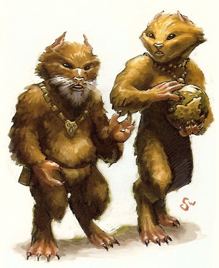

Drall
Special Abilities: Drall begin the game with one rank in Knowledge (Education). They still may not train Knowledge (Education) above rank 2 during character creation. Drall have a mind for problems and their solutions. In addition to using his skill or characteristic rating, a Drall adds ■ to the dice pool when providing skilled assistance.
The Drall are renowned throughout the galaxy as thinkers. A race of scholars and scientists, relatively few Drall ever journey beyond the bounds of the Corellian System, preferring to pursue sensible, quiet lives of study and reflection. Those Drall who undertake a life of perilous travel and adventure in the wider galaxy are rare indeed.
Averaging about one meter tall, with females being slightly taller, the Drall are covered in fur ranging from a ruddy brown to shades of grey and black. Drall have short snouts and small, almond-shaped black eyes which are sensitive to bright light. Their limbs are relatively short, giving them a somewhat dwarfish appearance, with well-articulated four-fingered hands and back-bent legs ending in slender, clawed feet. Drall mature quickly relative to humans, and tend to live for about one hundred galactic standard years.
Practical, dignified, and highly intelligent, the Drall tend to be very level-headed and unflappable, with a penchant for order and stability. Analytical and meticulous by their nature, the Drall excel at scientific investigation and research, record-keeping, and other scholarly pursuits. Throughout history, the Drall have produced countless brilliant scientists and engineers, and Drall theories undoubtedly helped lead to the development of hyperspace travel. There is little that does not interest them to some extent, yet for all their genius, Drall prefer to tackle problems in the abstract rather than implement their ideas to practical ends. As a result, the Drall rarely innovate new technologies, but instead adapt the tools of other species.
Drall society is ordered around extended family clans headed by a matriarch known as a Duchess. Rather than a hereditary or elected position, Duchesses are chosen by their predecessors or a council of elders based on merit, and they retain their title for life or until they choose to step down and appoint a successor. Once appointed, a Duchess owns all of her clan's property and goods, and she governs the clan as a sort of benevolent dictator, often taking direct interest in the lives of her individual subjects. Though no Duchess holds absolute sway over their homeworld, most clans tend to follow the general direction set by the Duchess of the most prosperous and influential clan (which can vary as clans' fortunes rise and fall).
Among the Drall, gossip is practically an art form, and a Drall will talk for hours about the latest news regarding his extended family or rumors about other clans. This tendency towards gregariousness can wear on other species, especially when a Drall begins to recount every trivial event regarding themselves and their families. While few Drall ever venture beyond the Corellian System—something frowned upon by most clans as aberrant and overly-adventurous behavior— Drall elsewhere in the galaxy are often employed by megacorporations, such as Athakam MedTech, Chiewab Amalgamated Pharmaceuticals, or TaggeCo, as researchers and pharmaceutical consultants. A few even earn their credits as information brokers or through criminal associations.
A relatively temperate world of rolling grasslands and forests, the Drall homeworld is the second planet from Corell. Dotted with several large, landlocked seas—the most famous of which is the Boiling Sea — Drall remains sparsely populated and largely rural, with only a few small urban regions and scattered townships. The climate is uncomfortably warm during the summer, only cooled by mild winter precipitation.
The Drall speak Drallish. As might be expected of a species obsessed with knowledge and record-keeping, Drallish is a very precise language with an enormous vocabulary and different words to describe subtle variations of the same thing or concept. Truly mastering the language is difficult for native speakers, and most non-Drall are lucky to be at best conversant. Nearly all Drall also speak Basic fluently, and most tend to speak multiple languages.
As a rule, the Drall are not an adventurous species, preferring to read about and study the galaxy from afar rather than experience it directly. However, some Drall do take to the stars to explore and seek knowledge and opportunities beyond their homeworld, an activity viewed as peculiarly un-Drallish by their peers. Because of their natural proclivities, Drall will most readily take on the roles of Doctor or Scholar, though particularly outgoing individuals might assume the mantle of Politico or even Trader.
The Drall have recorded their history for tens of thousands of years, going back long before the establishment of the Galactic Republic. However, prior to their recorded history, the Drall believe they were visited by an almost-mystical race of beings known as the Architects, who they maintain also built the vast Centerpoint Station. According to legend, the Architects moved their homeworld into orbit around Corell, along with the other planets of the Five Brothers. Descending to the Drall, the Architects walked among the creatures that crawled upon Drall.
At that time, the Drall were little more than beasts, who burrowed into the ground in terror. However, one Drall remained above the ground, her curiosity overcoming her fear. The Architects rewarded her courage by bestowing on her intelligence and wisdom, so that she could record the deeds of the Architects and rule over her people. Thus, she became the First Duchess. Generally considered an allegorical myth, some Drall maintain that the story is more fact than fantasy and that a chronicle of the Architects, known as the Celestial Record, actually exists. Such claims are usually dismissed out of hand by more sensible Drall.